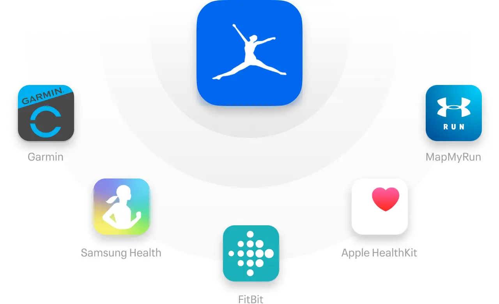

Education helped her lose 30 pounds.
MyFitnessPal gave me a wake up call to the way I was eating and made things clear what I needed to change.
-Stephanie
Want to eat more mindfully? Track meals, learn about your habits, and reach your goals with MyFitnessPal.
START FOR FREE
See a breakdown of calories and nutrients, compare serving sizes, and discover how the food you eat supports your goals.
Trying to lose weight, tone up, lower your BMI, or invest in your overall health? We give you the right features to get there.
Keeping a food diary helps you understand your habits and increases your likelihood of hitting your goals.
Scan barcodes, save meals and recipes, and use Quick Tools for fast and easy food tracking.
Join the World’s Largest Fitness Community for advice, tips, and support 24/7.
Every day, more than 3,000 members reach their goals with MyFitnessPal. Get inspired for the journey ahead.
MyFitnessPal gave me a wake up call to the way I was eating and made things clear what I needed to change.
-Stephanie
I naturally fell into the concept of mindful eating… it takes 15-20 minutes for the food to hit your stomach, so I started eating slower.
-Eric
Now, when I have friends starting to run and getting frustrated, I tell them to just stick with it, eventually, youll get faster.
-Lori
Get nutritionist-approved recipes and motivational workout tips from MyFitnessPal experts.

Easily link your MyFitnessPal account with apps that support your healthier lifestyle. It’s not just about calories. It’s about feeling better, looking better, and living better.
MyFitnessPal is one of the best weight loss apps and fitness apps, helping nearly 1 million members reach their nutrition and fitness goals every year. Members use it as a calories tracker and calorie counter to log their foods, and take advantage of the app’s food database that contains over 14 million foods. It’s not just a free calorie counter app — it’s also the best calorie counter app for people who are looking to take back control of their health and fitness.